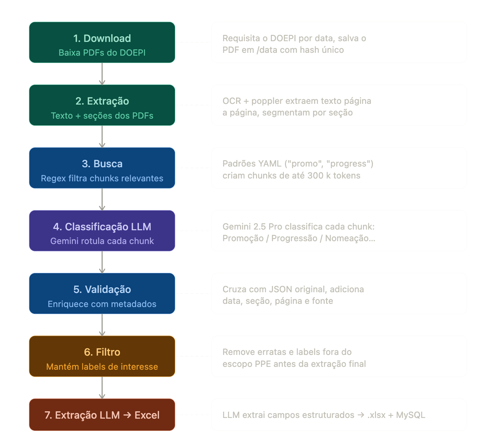
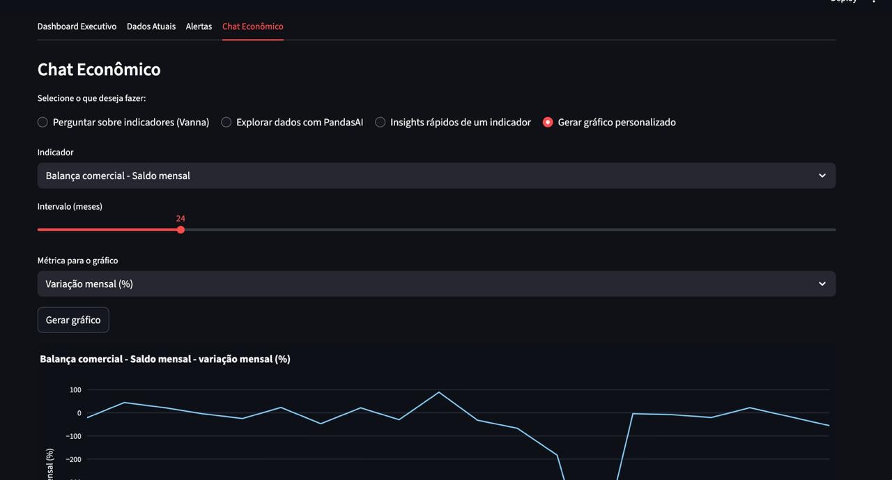
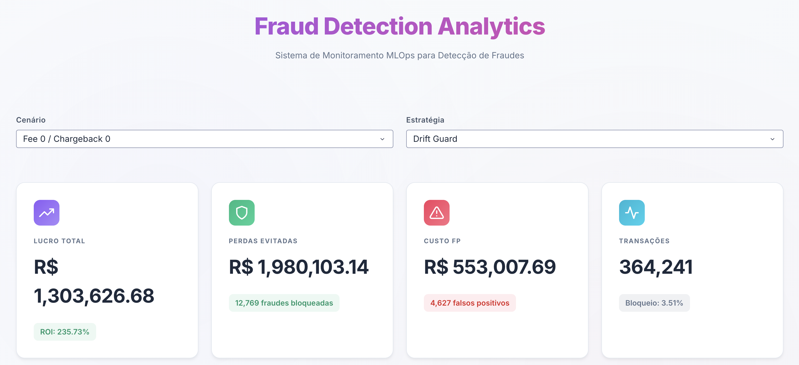
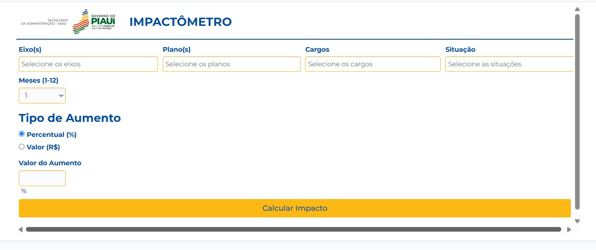

Olá,
eu sou Carlos Vinicios
Cientista de Dados
Fale comigo
Sobre Mim
Cientista de Dados com experiência prática na implementação de soluções RAG ponta a ponta, agentes e integrações com LLMs em produção. Atuo com Python, FastAPI, CrewAI, LangChain, LlamaIndex, PostgreSQL, Docker e AWS, incluindo ingestão e parsing de documentos, embeddings, recuperação semântica, saídas estruturadas, observabilidade, avaliação de respostas e otimização de custo e latência.
Minhas Habilidades
LLMs & RAG
Experiência com OpenAI, Gemini e Anthropic APIs, embeddings, prompt engineering, structured outputs e pipelines RAG ponta a ponta.
Agentes & Orquestração
Implementação de agentes e fluxos com CrewAI, LangChain, Agno e LlamaIndex, incluindo avaliação e automação de workflows com LLMs.
Bancos Vetoriais
Recuperação semântica, embeddings e indexação vetorial com PostgreSQL/pgvector, Chroma e integração com pipelines de documentos.
AWS & MLOps
Experiência com AWS (EC2, S3, Glue e Athena), Airflow, CI/CD, ETL/ELT, monitoramento e boas práticas de MLOps.
Back-end & APIs
Desenvolvimento com Python, FastAPI, APIs REST, webhooks, PostgreSQL, Pydantic, JSON estruturado e serviços assíncronos integrados.
Deploy & Observabilidade
Docker, Git/GitHub, logging estruturado, tracing, observabilidade e monitoramento de respostas, custo e latência em produção.
Projetos em Destaque

Pipeline PPE (Diários Oficiais)
Sistema automatizado para processar o Diário Oficial do Estado do Piauí, extraindo e classificando movimentações de servidores públicos a partir de PDFs não estruturados até a entrega em Excel e banco relacional.

Plataforma Macroeconômica com LLM
Plataforma de inteligência macroeconômica construída com CrewAI, Vanna AI, FastAPI e Airflow, com foco em analytics conversacional e consultas seguras sobre indicadores.
Conecta-Zap (Idosos)
Backend conversacional para trilha automatizada de letramento digital via WhatsApp, com onboarding, 10 pílulas educativas, agendamento recorrente, métricas operacionais e geração de dicas extras com IA.

IEEE-CIS Fraud - MLOps
Pipeline MLOps ponta a ponta para fraude com simulação financeira, monitoramento contínuo de drift, retreinamento condicionado e comparação entre estratégias de operação sobre a base IEEE-CIS Fraud Detection.

SGI / MENP
Sistema interno de gestão para administração pública, com backend voltado a cadastros, demandas, atendimentos, documentos, relatórios, dashboards e integrações com MySQL e Oracle.
Planejamento Financeiro Pessoal com IA
Backend de IA para automação financeira via WhatsApp, com processamento multimodal de texto, imagens de boletos/notas e áudios, confirmação antes do salvamento e persistência estruturada em PostgreSQL.
Contato
Atualmente aberto a novas oportunidades e desafios inovadores na área de Inteligência Artificial. Você pode falar comigo pelo LinkedIn ou diretamente no WhatsApp.
Enviar Mensagem no WhatsApp